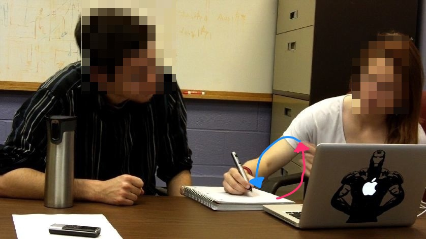
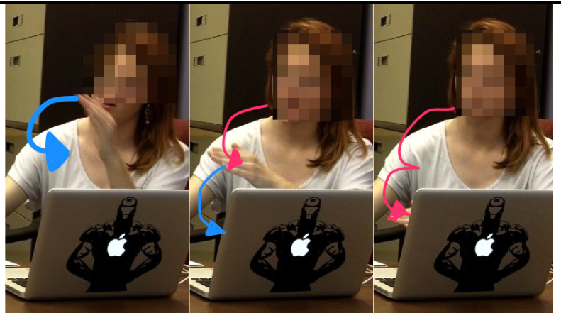

Rebecca's gestural pseudo-coding |
|||
|---|---|---|---|
| Time | Speaker | Speech | Media |
| 33:33 | Rebecca | and then my thinking at least, is you should be able to, um, say that "star p of i" /mmhmm/ equals, uh, the title, and then you just do i++, so then it’ll {{move to the next one}} ![makes looping gesture with left hand][1] /OK/ |

|
| 34:00 | Rebecca | and you just keep {{saving each of the pointers}} ![left hand makes horizontal chops in the air, like rungs down a ladder][2] |

|